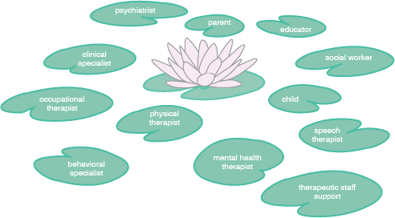

A collaboration tool that supports data-based decision-making about interventions for children with special needs.
Each Lilypad helps a behavioral specialist record data in the moment, while working with a child who has special needs. Together, the system of Lilypads enables sharing and analysis of the data that has not been possible before. The Lilypad system was designed together with real behavioral specialists who wanted a better way to record and analyze data.
Data-Based Decision-Making for Children with Special Needs
Behavioral and mental health specialists record data on a daily basis to track a child's progress. They use the data to get a picture of how a child is doing, identify patterns, and predict behaviors. They use what they learn from the data to make ongoing decisions about behavioral interventions for that child.
The Lilypad system is designed to support this data-based decision-making process.
Collaboration Around Data

Many people are involved in developing, implementing, and monitoring behavioral interventions for children with special needs. With the Lilypad system, these people can connect, look at the same data, stay informed, and discuss the child's progress to make decisions together.
Research Questions
The Lilypad system is a research platform which will allow us to explore data-based decision-making and how it can be supported through a collaborative tool.
Individual
Interpersonal
Organizational
Community and Policy
Will better access to behavioral data help caregivers understand the needs and wants of nonverbal children?
Will communication through our system-such as annotating graphs and discussions about visualizations of data-increase face-to-face communication about data?
Will graphs and simple analytics lead to improved communication or new uses of data in treatment team meetings?
How might increased access to data, and new capabilities for analytics, influence discourse at the community and policy levels?
Would it support behavioral therapy to show a child a visualization of his data?
The Lilypad Concept
Each Lilypad is one individual's tool for recording data.
But each Lilypad is also highly connected within an ecosystem of Lilypads, facilitating collaboration around the aggregated data.
The Lilypad system supports recording data more consistently across behavioral specialists, analyzing the data in ways that were not possible before with paper-based methods, and discussing aggregated data to share interpretations and make decisions with it.